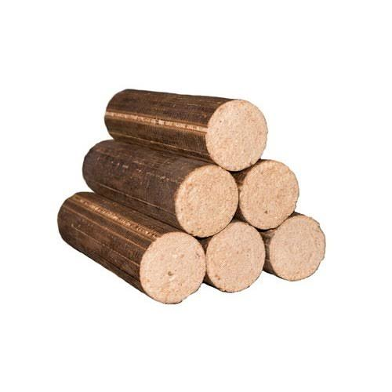

Our Briquettes
Charcoal briquettes are affordable briquettes that burn for over 4 hours with no smoke, sparks or smell, making them ideal for cooking, roasting, industrial heating, water heating applications and space heating.
Charcoal briquettes have higher calorific value, meaning they have higher heat content and can be used in industries for their boilers.
Charcoal briquettes burn up to three times longer than traditional charcoal thus making them more efficient.
